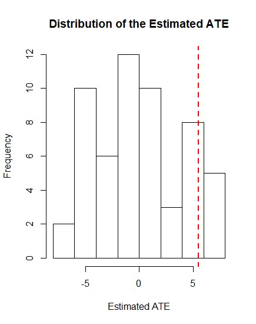

S. Navid Hojaji

Master of Business Administration
R Scripts
Contact Information 🌍

R Scripts
In this page some of my R scripts will be demonstrated; It is a work in progress.
My first code in this page is dedicated to an instance of Randomized Inference.
# load the RI package
# one possible treatment assignment
# no blocking is assumed when generating probability
library(ri)
# random number seed, so that results are reproducible
set.seed(12345678)
# Data are hypothetical Y0 <- c(12,13,15,10,18,16,17,20)
Y1 <- c(17,18,23,13,20,24,29,20)
# one possible treatment assignment
Z <- c(1,1,0,0,0,0,1,0)
# observed outcomes given assignment
Y <- Y1*Z + Y0*(1-Z)
# no blocking is assumed when generating probability
of treatment and probabilities are 2/7 for all units
probs <- genprobexact(Z,blockvar=NULL)
# estimate the ATE(average treatment effect)
ate <- estate(Y,Z,prob=probs)
# set the number of simulated random assignments
perms <- genperms(Z,maxiter=10000,blockvar=NULL)
# show all 21 possible random assignments in which 2 units are treated
perms
[,1] [,2] [,3] [,4] [,5] [,6] [,7] [,8] [,9] [,10] [,11] [,12] [,13] [,14]
1 1 1 1 1 1 1 1 1 1 1 1 1 1 1
2 1 1 1 1 1 1 0 0 0 0 0 0 0 0
3 1 0 0 0 0 0 1 1 1 1 1 0 0 0
4 0 1 0 0 0 0 1 0 0 0 0 1 1 1
5 0 0 1 0 0 0 0 1 0 0 0 1 0 0
6 0 0 0 1 0 0 0 0 1 0 0 0 1 0
7 0 0 0 0 1 0 0 0 0 1 0 0 0 1
8 0 0 0 0 0 1 0 0 0 0 1 0 0 0
[,15] [,16] [,17] [,18] [,19] [,20] [,21] [,22] [,23] [,24] [,25] [,26] [,27]
1 1 1 1 1 1 1 1 0 0 0 0 0 0
2 0 0 0 0 0 0 0 1 1 1 1 1 1
3 0 0 0 0 0 0 0 1 1 1 1 1 0
4 1 0 0 0 0 0 0 1 0 0 0 0 1
5 0 1 1 1 0 0 0 0 1 0 0 0 1
6 0 1 0 0 1 1 0 0 0 1 0 0 0
7 0 0 1 0 1 0 1 0 0 0 1 0 0
8 1 0 0 1 0 1 1 0 0 0 0 1 0
[,28] [,29] [,30] [,31] [,32] [,33] [,34] [,35] [,36] [,37] [,38] [,39] [,40]
1 0 0 0 0 0 0 0 0 0 0 0 0 0
2 1 1 1 1 1 1 1 1 1 0 0 0 0
3 0 0 0 0 0 0 0 0 0 1 1 1 1
4 1 1 1 0 0 0 0 0 0 1 1 1 1
5 0 0 0 1 1 1 0 0 0 1 0 0 0
6 1 0 0 1 0 0 1 1 0 0 1 0 0
7 0 1 0 0 1 0 1 0 1 0 0 1 0
8 0 0 1 0 0 1 0 1 1 0 0 0 1
[,41] [,42] [,43] [,44] [,45] [,46] [,47] [,48] [,49] [,50] [,51] [,52] [,53]
1 0 0 0 0 0 0 0 0 0 0 0 0 0
2 0 0 0 0 0 0 0 0 0 0 0 0 0
3 1 1 1 1 1 1 0 0 0 0 0 0 0
4 0 0 0 0 0 0 1 1 1 1 1 1 0
5 1 1 1 0 0 0 1 1 1 0 0 0 1
6 1 0 0 1 1 0 1 0 0 1 1 0 1
7 0 1 0 1 0 1 0 1 0 1 0 1 1
8 0 0 1 0 1 1 0 0 1 0 1 1 0
[,54] [,55] [,56]
1 0 0 0
2 0 0 0
3 0 0 0
4 0 0 0
5 1 1 0
6 1 0 1
7 0 1 1
8 1 1 1
# estimate sampling dist under the sharp null that tau=0 for all units
# --------------------------------------------------------------------
# create potential outcomes under the sharp null of no effect for any unitYs <- genouts(Y,Z,ate=0)
# show the apparent potential outcomes under the sharp null
Ys
$Y0
[1] 17 18 15 10 18 16 29 20
$Y1
[1] 17 18 15 10 18 16 29 20
# generate the sampling distribution based on the implied schedule of potential
outcomes implied by the null hypothesis
distout <- gendist(Ys,perms,prob=probs)
# estimated ATEate
[1] 5.533333
# list the distribution of possible estimates under the sharp null of no effect
sort(distout)
[1] -6.7333333 -6.2000000 -5.6666667 -5.6666667
[5] -5.6666667 -5.1333333 -5.1333333 -4.6000000
[9] -4.6000000 -4.6000000 -4.0666667 -4.0666667
[13] -3.5333333 -3.0000000 -3.0000000 -3.0000000
[17] -2.4666667 -2.4666667 -1.9333333 -1.9333333
[21] -1.4000000 -1.4000000 -1.4000000 -1.4000000
[25] -0.8666667 -0.8666667 -0.3333333 -0.3333333
[29] -0.3333333 -0.3333333 0.2000000 0.2000000
[33] 0.2000000 0.7333333 0.7333333 0.7333333
[37] 1.2666667 1.2666667 1.8000000 1.8000000
[41] 2.8666667 3.4000000 3.9333333 4.4666667
[45] 4.4666667 4.4666667 5.0000000 5.0000000
[49] 5.5333333 5.5333333 5.5333333 6.0666667
[53] 6.0666667 6.6000000 7.1333333 7.1333333
# one-tailed comparison used to calculate p-value
sum(distout=ate)/nrow(as.matrix(distout))
[1] 0.1428571
# two-tailed comparison used to calculate p-value
sum(abs(distout) >= abs(ate))/nrow(as.matrix(distout))
[1] 0.2321429
# display p-values, 95% confidence interval, standard error under the null,
and graph the sampling distribution under the null
dispdist(distout,ate)

$two.tailed.p.value
[1] 0.2857143
$two.tailed.p.value.abs
[1] 0.2321429
$greater.p.value
[1] 0.1428571
$lesser.p.value
[1] 0.9107143
$quantile
2.5% 97.5%
-6.000000 6.933333
$sd
[1] 3.931557
$exp.val
[1] -1.903348e-15
# Compare reuslts to traditional t-test with unequal variance
t.test(Y~Z,
alternative = "less",
mu = 0, paired = FALSE, var.equal = FALSE)
Welch Two Sample t-test
data: Y by Z
t = -1.3183, df = 2.791, p-value = 0.1426
alternative hypothesis: true difference in means is less than 0
95 percent confidence interval:
-Inf 4.653465
sample estimates:
mean in group 0 mean in group 1
15.80000 21.33333
t.test(Y~Z,
alternative = "two.sided",
mu = 0, paired = FALSE, var.equal = FALSE)
Welch Two Sample t-test
data: Y by Z
t = -1.3183, df = 2.791, p-value = 0.2852
alternative hypothesis: true difference in means is not equal to 0
95 percent confidence interval:
-19.475144 8.408477
sample estimates:
mean in group 0 mean in group 1
15.80000 21.33333
Message